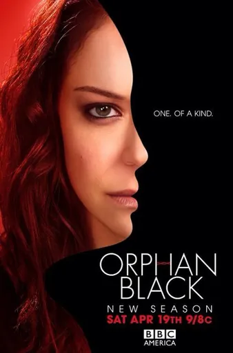

The genetics
Human cloning and genetic control are the centre of the series, which explores their ethical implications and their effect on identity. The clones share a genome but have very different personalities and lives, all played by Tatiana Maslany, making the series an extended reflection on nature and nurture. The scientists are portrayed in many ways: the Neolution movement and the Dyad Institute pursue eugenics and profit, treating the clones as property, and their DNA even carries a code declaring them "restricted intellectual property" with patent numbers; the original geneticists, Ethan and Susan Duncan, created the clones and later faked their deaths; and Cosima, herself a clone, uses science to understand and fight the disease that is killing her sisters, attempting a gene therapy. Other storylines involve a parallel male cloning project run by the military and a genetic chimera as the original source of both lines. The series had a science consultant, Cosima Herter, to keep its science plausible. In reality, the US Supreme Court ruled in 2013 that naturally occurring human DNA cannot be patented.
How genetics is portrayed
- Overall portrayal of genetics
- mixed The series sets institutions that patent and control human life (Dyad, Neolution, the military, a sect) against a central heroic scientist, Cosima, whose genetics is the clones' hope of survival; science co-opted by powerful institutions is harmful, while in individual hands it is a force for good.
- Outcome of the genetic intervention
- mixed The cloning projects produce sterile, surveilled women dying of a designed illness, Castor clones who go mad and sterilise women, and years of murders and kidnappings; against this, Cosima's gene therapy gives the clones a path to a cure and the series ends with them free of Neolution.
- Neolution / Dyad Institute (Dr. Aldous Leekie, Rachel Duncan, P.T. Westmorland, Evie Cho)
- villain Aim: ideological, commercial, power (negative). The movement and its biotech institute run Project Leda to direct human evolution, patent the clones' DNA as intellectual property, plant monitors in their lives, design them sterile and hunt Kira for study; the series stages them as its sinister antagonists, defeated in the finale.
- Project Castor (military, Dr. Virginia Coady)
- villain Aim: military (negative). The military male-clone programme raises Castor clones as soldiers, designs them to sterilise women through sex and illegally sterilises ordinary women to gather data; it is shown as inhumane.
- Ethan and Susan Duncan
- ambivalent Aim: curiosity (neutral). The original geneticists created the Leda and Castor lines, then faked their deaths and hid their secrets in a coded book; they are sympathetic but regretful figures who abandoned Rachel.
- Cosima Niehaus and Delphine Cormier
- hero Aim: benevolent, personal (positive). Cosima, a clone and evolutionary biology student, decodes the clones' DNA tags and works with Delphine, a Dyad monitor who defects, on a gene therapy from Kendall Malone's cells to cure the illness killing her sisters; both are heroes of the clone club.
- The Proletheans (Hank Johanssen)
- villain Aim: ideological (negative). The religious sect uses Helena as a clone assassin, then harvests her eggs to breed with its leader and attempts its own Castor clone, which dies as an infant.
The story
Sarah Manning, a British con artist in Toronto, sees a woman who looks exactly like her, Beth Childs, kill herself, and takes over Beth's identity as a police detective. She discovers that she is one of many genetically identical women created by an illegal cloning experiment, Project Leda, and that someone is killing them. With her foster brother Felix and fellow clones Alison and Cosima, a graduate student, she uncovers the origin of the clones in Neolution, a movement that aims to direct human evolution through science, based in the powerful biotech Dyad Institute. The Dyad monitors the clones, who are sterile by design, and seeks to profit from them, while a religious sect, the Proletheans, uses Sarah's twin, Helena, to kill them. Sarah's daughter, Kira, the only known child of a clone, becomes a target for both. Over five seasons (2013–2017), the clones fight to win control over their own bodies and lives.